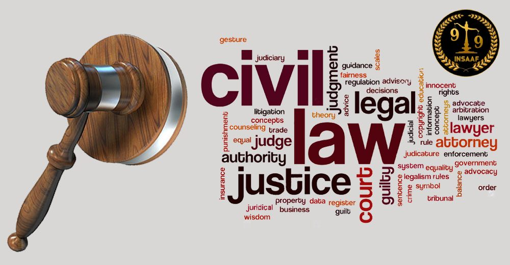

Domestic Violence
What Evidence Is Needed for Domestic Violence? | DV Act Explained
Understand common forms of evidence, documentation and legal steps in domestic violence matters.
Explore our legal articles written in simple language to help you understand common legal processes and issues.
Understand common forms of evidence, documentation and legal steps in domestic violence matters.
A practical overview of factors that can affect legal fees in mutual and contested divorce matters.

An overview of civil disputes, property matters, civil suits and legal representation.

Learn how to identify the right legal assistance for family, criminal and civil matters.
Know the basic process for defective products, deficient services, refunds and compensation claims.

Understand criminal defence, bail, anticipatory bail and court representation.
A guide to legal remedies and protection available in domestic violence situations.
Understand the broad difference between mutual and contested divorce proceedings.
A guide to common matrimonial disputes, divorce, custody and related family matters.

Learn about common family disputes and the legal options available for resolution.
Key points to consider when seeking legal help for property disputes, documents and transactions.
Understand common legal requirements involving businesses, contracts and corporate disputes.
An overview of legal support for companies, startups, contracts and compliance matters.
Understand the general stages involved in a mutual-consent divorce proceeding.
Important legal considerations before starting a divorce proceeding.
Understand representation and preparation involved in High Court divorce matters.
A practical overview of family disputes, custody and matrimonial proceedings.
A simplified overview of the divorce process and documents commonly involved.
Learn about criminal complaints, defence strategy, bail and court proceedings.

Understand the basic legal process following cheque dishonour and available remedies.
An overview of Special Leave Petition matters and the importance of proper drafting.

Understand factors commonly considered in child custody and guardianship disputes.
An overview of matrimonial disputes and the legal assistance available to families.

Understand documentation, eligibility and the general court marriage process.
Important legal areas where businesses may need professional legal assistance.
A practical guide to custody proceedings, parental rights and court considerations.
Understand how legal advice can help with divorce, custody and matrimonial disputes.
Understand anticipatory bail, when it may be sought and the general court process.
An overview of civil litigation involving property, contracts, partition and related disputes.
Understand common criminal-law proceedings and the role of legal representation.
Learn about common property disputes, documentation and legal remedies.
Understand regular bail, anticipatory bail and preparation for bail proceedings.
An overview of legal issues that commonly arise in family disputes.
Learn about legal representation in criminal complaints, investigations and trials.
Understand the importance of legal preparation during divorce proceedings.
A guide to common family-law matters including divorce and child custody.
Understand common matrimonial disputes and the stages of legal proceedings.
Important considerations when beginning a divorce or matrimonial case.
A general guide to making a police complaint and keeping relevant records.
Understand the basic concept and process of contested divorce proceedings.
An informational overview of the legal position and related criminal-law considerations.
Understand how legal advice can help with documentation, procedure and representation.
A general overview of legal considerations surrounding surrogacy in India.
Understand the basic legal route and documentation relevant to medical negligence claims.
An informational guide to important divorce-law considerations; laws should be checked for current applicability.
Understand the concept of prenuptial agreements and their legal considerations in India.
General information about court marriage where one party is a foreign national.
A simple overview of eligibility, documentation and the general procedure.
Understand the basic steps after cheque dishonour and the legal remedy generally available.
A general guide to the legal process following cheque dishonour.
Understand the purpose and general process of anticipatory bail.
A simplified overview of bail and factors involved in bail proceedings.
Understand the broad steps involved in initiating divorce proceedings in India.
A clear comparison of the two broad types of divorce proceedings.
Understand the broad factors that may be considered when determining maintenance.
An overview of common legal grounds for divorce under applicable matrimonial law.
Understand basic custody principles and factors considered in custody disputes.
An informational discussion of maintenance obligations and factors relevant to such claims.
A general overview of commonly recognised grounds for matrimonial separation.